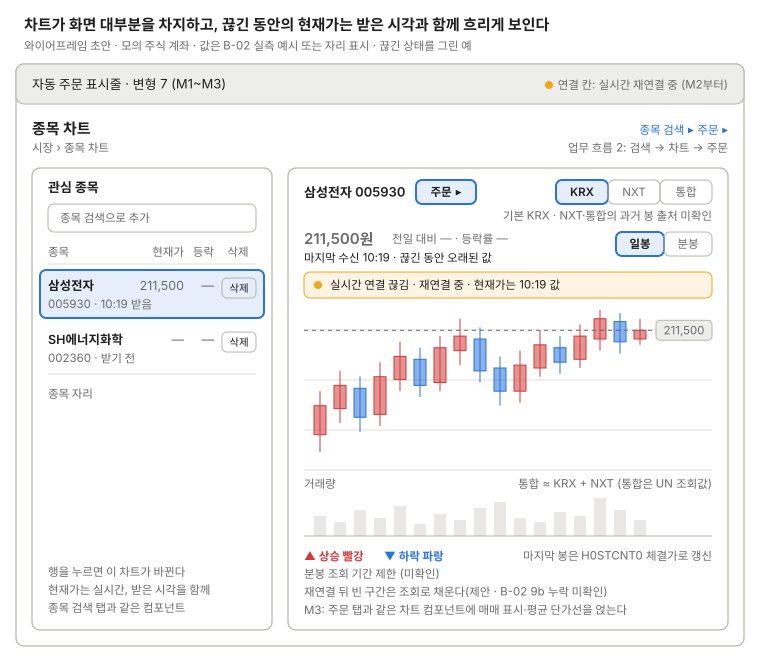

종목 차트
일봉·분봉 캔들과 거래량 위에 실시간 체결가를 갱신한다(Lightweight Charts).

관심 종목에서 고른 종목의 캔들과 거래량이 화면 대부분을 차지하고, 종목명 옆 "주문 ▸"은 이 종목을 채운 채 주문 화면을 연다(주문은 M3, M2에는 자리만). 실시간 연결이 끊기면 차트 위 띠와 표시줄 연결 칸이 재연결 중임을 알리고, 현재가는 마지막 받은 시각과 함께 흐리게 보인다.
쓰는 공통 UI
화면 틀 · 자동 주문 표시줄 (변형 7, M2부터 연결 상태 칸)
상태
| 상태 | 보일 것 |
|---|---|
| 차트 불러오는 중 | 캔들 자리에 불러오는 중 표시, 현재가 "—" |
| 캔들 없음(백필 전·신규 상장) | "봉 없음" 안내와 이유 |
| 장 시작 전 | 분봉은 빈 영역, 현재가 칸에 전일 종가와 기준일 |
| 장 마감 뒤 | 현재가 칸에 "종가"와 기준일 |
| 실시간 끊김·재연결 중 | 차트 위 경고 띠, 현재가와 마지막 봉 태그를 흐리게, 마지막 수신 시각 |
| 재연결 뒤 | 빈 구간을 조회로 채운 뒤 띠를 닫는다(제안, 재연결 사이 누락은 B-02 9b 미확인) |
| 거래정지 | 종목명 옆 상태 배지(표시명 미정), 실시간 갱신 없음 |
| 관심 종목 0개·고른 종목 없음 | 차트 자리에 "종목 검색 ▸" 안내 |
| 조회 실패(초당 호출 한도 등) | 차트 자리에 실패 안내와 다시 시도 |
| NXT·통합 고름 | "과거 봉 출처 미확인" 표시(B-02는 현재가의 시장구분만 확인) |
화면 규칙
- 보여 줄 것: 캔들, 거래량, 현재가, 시장 구분(KRX / NXT / 통합) 토글(기본 KRX, NXT·통합의 과거 봉 출처 미확인), 연결 상태, 마지막 받은 시각, 주문 ▸ 버튼
- 데이터: 현재가
FHKST01010100(stck_prpr), 실시간H0STCNT0. 통합 거래량 ≈ KRX + NXT(통합은 UN 조회값을 쓰고 두 값을 더해 만들지 않는다) - 미확인: 분봉 조회 기간 제한
- 주의: WebSocket은 예고 없이 끊긴다(자동 재연결). 끊김·재연결 중 표시가 필요하다
- 미정: 전일 대비·등락률을 KIS 응답 필드로 쓸지 전일 종가로 계산할지(B-02는
stck_prpr만 확인) - M3: 주문 페이지와 같은 차트 컴포넌트를 쓰고 매매 표시·평균 단가선을 얹는다